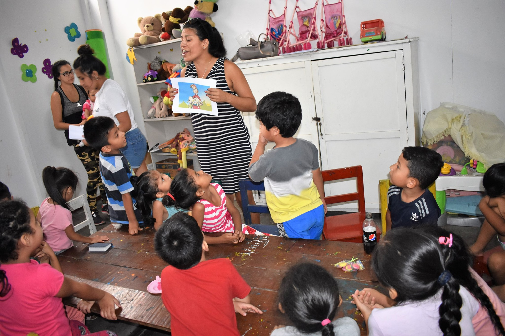
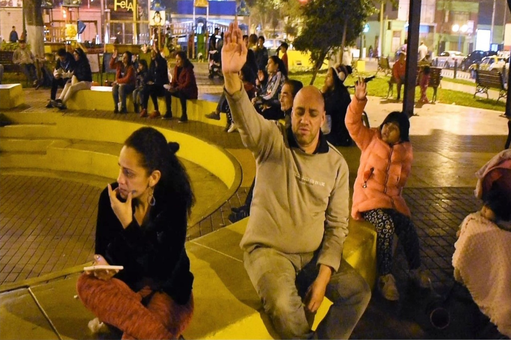

Cada persona tiene dones y talentos únicos que pueden ser utilizados para servir a Dios y a los demás de diversas formas. Ya sea ayudando a los niños a aprender acerca de Jesús en nuestro ministerio infantil, dando la bienvenida a los invitados por primera vez, colaborando detrás de escena con el equipo de producción, distribuyendo alimentos en la comunidad o brindando esperanza a la gente, ¡Hay muchas oportunidades para que marques la diferencia!

Servir con Los Niños
El equipo que cuida a los niños está formado por voluntarios que sirven dentro del ministerio de niños de La Comunidad Carismática Jesucristo en el Señor. El equipo usa sus dones y talentos para hacer posible llegar a cientos de niños en todas partes con el mensaje vivificante de Jesucristo cada fin de semana. Mientras los padres experimentan su servicio de adoración, los niños participan en ambientes emocionantes y activos llenos de adoración, enseñanza bíblica y grupos pequeños.
Servir como Ujier
Lo más probable es que la primera interacción que tuvo en la congregación fue con alguien de nuestro equipo de Ujieres. El equipo de Ujieres se enfoca en hacer que todos los que llegan se sientan bienvenidos. Ya sea para saludar, ayudar a los que visitan por primera vez, en caso a emergencias o más, el equipo Ujieres juega un papel importante en la experiencia de cada visitante.
¡Venga a marcar la diferencia como parte del Dream Team de Ujieres!


Evangelismo en la Calle
El objetivo del evangelismo es presentar el amor de Jesús a las personas y brindarles la oportunidad de tener una relación personal con Él. El evangelismo en la calle es una forma de compartir la fe cristiana con otras personas y puede ser considerado como un servicio dentro de la iglesia. No se trata solo de convencer a las personas, sino de mostrarles el amor y la gracia de Dios, respetando las decisiones y creencias de cada individuo.
Corintios 3:6-8 -> Yo planté, Apolos regó; pero el crecimiento lo ha dado Dios.